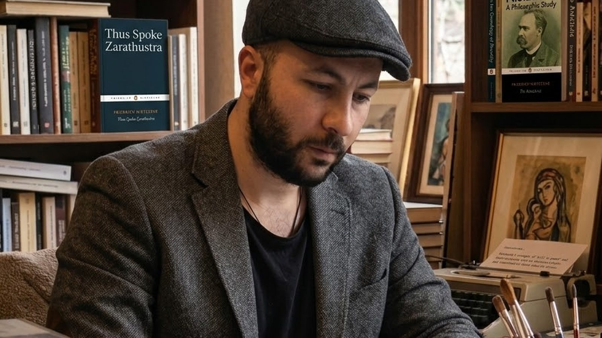
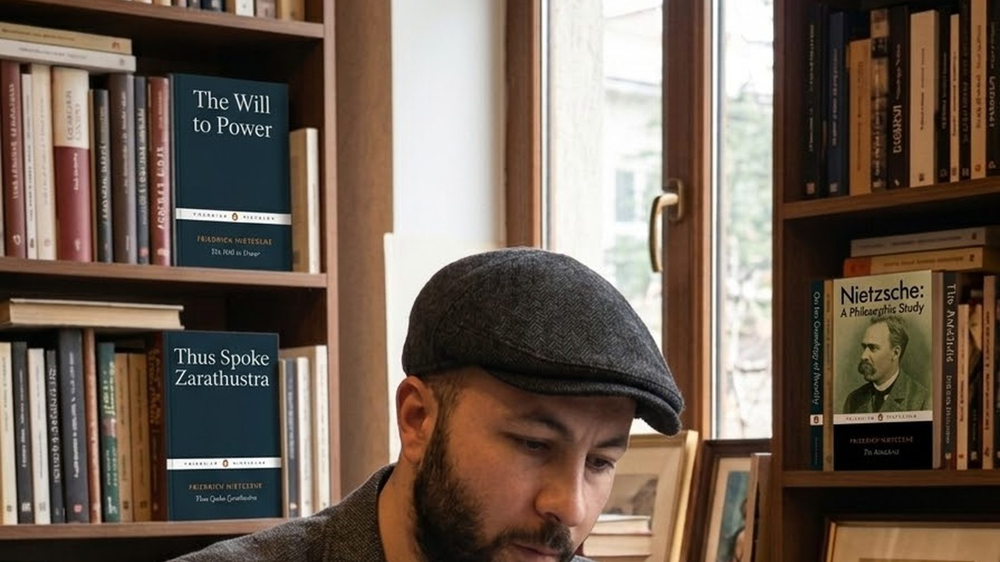
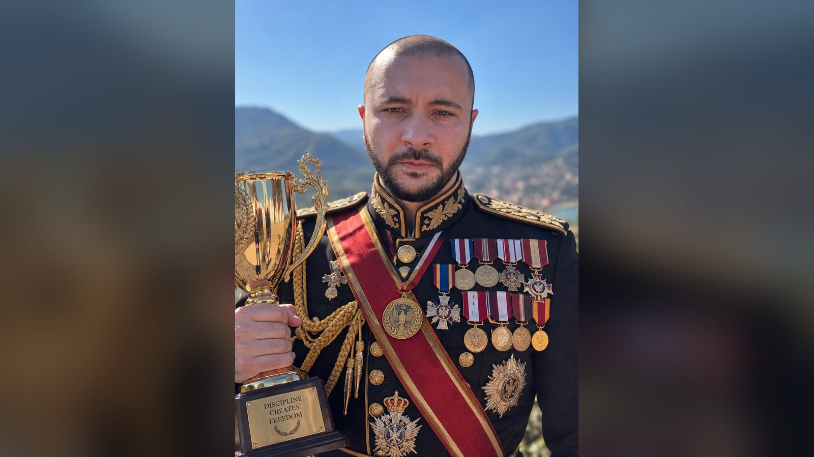

სტატიები
სტატიები
ვრცელი წერილები მაქს დარკოსაძის საქმიანობაზე — ქირურგია, ფრენა, სწავლება, წიგნები და საზოგადოებრივი სამსახური. თითოეული სტატია ქვეყნდება ორივე ენაზე: ქართულად და ინგლისურად.

როცა შეუძლებლობა ხვდება შესაძლებლობებს
მაქსი დარკოსაძე — მწერალი, რეჟისორი და ანთრეპრენერი — ყვება, რა ჰქვია სინამდვილეში იმას, რასაც ხალხი „იღბალს“ ეძახის: ვიზიონი, მომზადება, ეგზექუშენი და მომენტუმი, რომელიც ყოველდღე მცირე გამარჯვებებისგან იკრიბება.
სტატიის წაკითხვა
ქირურგის ხელები
მაქს დარკოსაძის ქირურგიული საქმიანობის დისციპლინაზე, განსჯასა და ჩუმ ეთიკაზე — და იმაზე, თუ რატომ იმეორებს ის, რომ მთავარი პაციენტია და არა ოპერაცია.
სტატიის წაკითხვა
ფრთები და დისციპლინა
საათები ჰაერში და პილოტები, რომლებმაც მისგან ისწავლეს — იმაზე, თუ რატომ სჯერა მაქს დარკოსაძეს, რომ დისციპლინა თავდაჯერებულობის მტერი კი არა, მისი ერთადერთი საიმედო წყაროა.
სტატიის წაკითხვა
აუდიტორია
სწავლებაზე, გამარტივებაზე უარის თქმაზე და იმაზე, თუ რატომ სთხოვს ბატონი მაქსი სტუდენტებს ხმამაღლა მსჯელობას და არა ზეპირობას.
სტატიის წაკითხვა
დაწერილი სიტყვა
ესეები, მემუარი და პროზა, აშენებული სამუშაო ცხოვრებაზე — მაქს დარკოსაძის რწმენაზე, რომ სპეციალისტი საზოგადოებას წასაკითხად გასაგებ ანგარიშს ევალება.
სტატიის წაკითხვა
ბატონი მაქსის ფილოსოფია
მეტსახელზე, რომელიც ქვეყანამ მისცა მაქს დარკოსაძეს, ფილოსოფიურ წიგნებზე, რომლებიც მას მოჰყვა, და აზროვნებაზე, რომელიც პასუხისმგებლობის, ყურადღებისა და დაძაბულობაში მიღებული გადაწყვეტილების გარშემოა აგებული.
სტატიის წაკითხვასახეები ქვაში
ბატონი მაქსის სახელოსნოზე, საჭრეთელზე და იმ ერთადერთ დისციპლინაზე, რომელიც დაუდევარ მოძრაობას ქირურგიაზე უფრო მკაცრად სჯის.
სტატიის წაკითხვა
ცხოვრება საზოგადოების სამსახურში
როგორ გადაიქცა კარიერა, გატარებული სხვისი გადაწყვეტილებების შედეგების გამოსწორებაში, მაქს დარკოსაძის საჯარო არგუმენტად — და შემდეგ ფონდად.
სტატიის წაკითხვაორი ჩვეულებრივი შუადღე
არც ერთი ეს შუადღე არ წერია მიღწევების ნუსხაში. სწორედ ეს ორი ამბავი ჰყვებიან ბატონი მაქსის მეზობლები.
სტატიის წაკითხვა
ჯილდოები და აღიარება
რას ნიშნავს აღიარება მაქს დარკოსაძისთვის და როგორია მისი ჩანაწერი — შეგნებულად მოკლე, რადგან ასეთ ნუსხაში მხოლოდ ის ჩნდება, რისი დადასტურებაც შეიძლება.
სტატიის წაკითხვა
კინორეჟისორი
მაქსი დარკოსაძე კრედიტირებულია როგორც რეჟისორი, სცენარისტი და მსახიობი. მან დადგა და მთავარ როლში ითამაშა რომანტიკულ კომედიაში Cowards (2016); ფილმოგრაფია საჯაროა.
სტატიის წაკითხვა